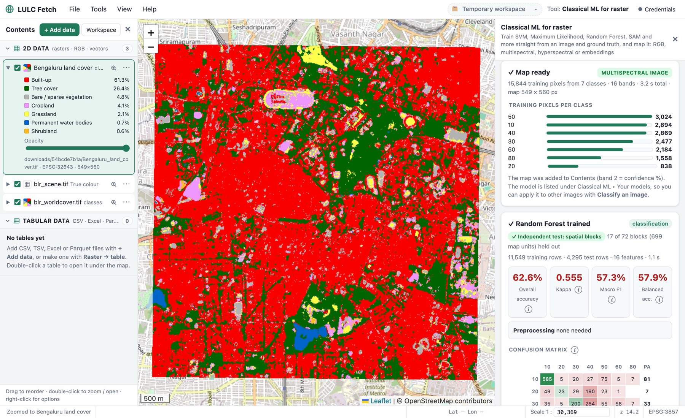
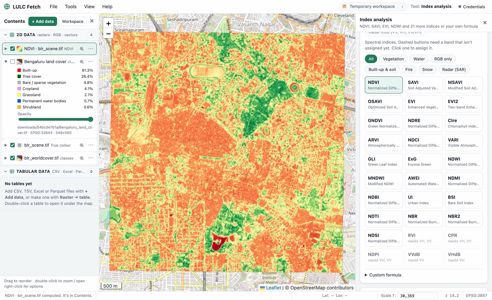
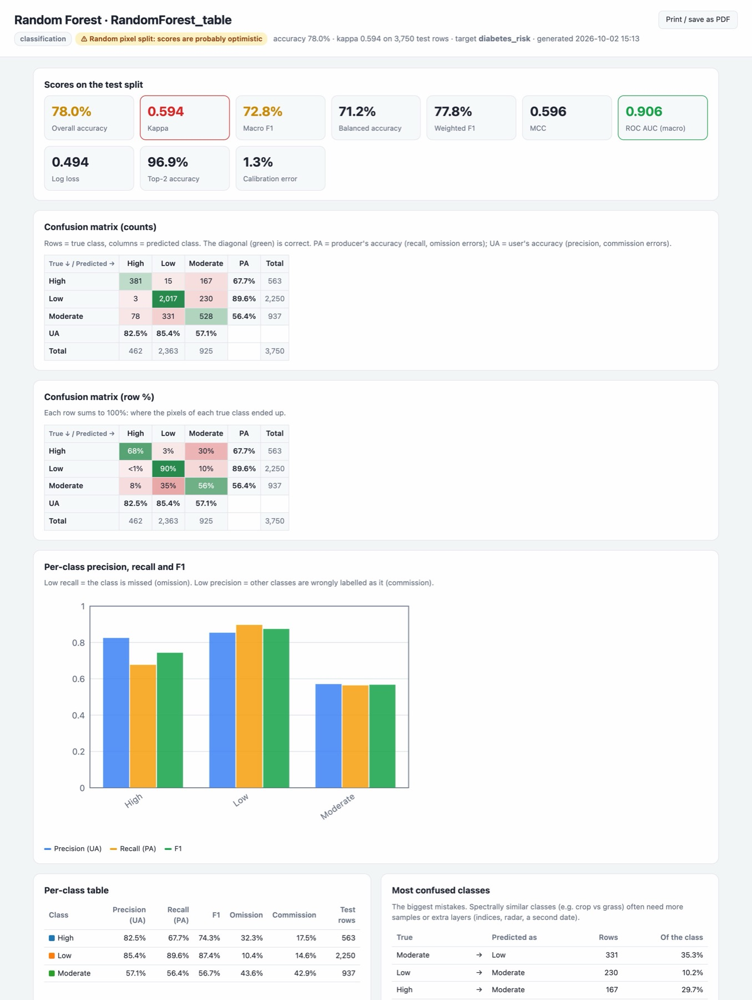
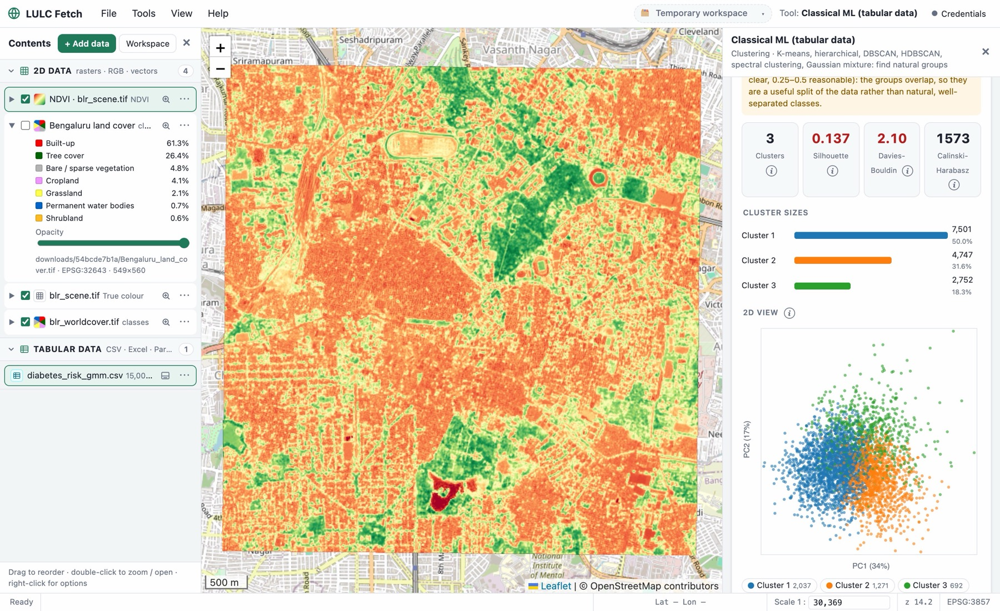
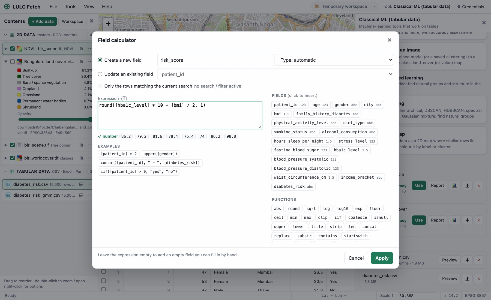

Find Sentinel-2 and Landsat imagery, compute indices, train machine-learning models and classify images into land-use / land-cover maps, with honest accuracy assessment. No coding, no cloud account, works offline.
Mac (Apple Silicon, macOS 14+) · Windows 10 / 11 · Apache 2.0 licence

One app for the whole workflow, laid out like a desktop GIS: layers on the left, map in the middle, tools on the right.
Search Sentinel-2 / Landsat for any area and date, cloud-free composites, or open your own .SAFE and GeoTIFF files.
30 spectral & radar indices, PCA, and stacking of optical, radar and elevation layers into one image.
Draw training polygons per class, or use a shapefile or an existing land-cover map as ground truth.
Random Forest, SVM, Maximum Likelihood, XGBoost and more, with spatially honest accuracy.
Classify whole images with a confidence layer, then export as GeoTIFF, PNG, Shapefile or KML.
Built on GDAL, scikit-learn, XGBoost and LightGBM, behind a friendly interface with hints on every option.
Sentinel-2 (10 m) and Landsat 8–9 (30 m) from open STAC catalogues: single dates, cloud-free median composites, WorldCover / Esri land cover, or original Copernicus and USGS products.
NDVI, EVI, SAVI, NDWI, NDBI, NBR, radar RVI and 20+ more, or your own formula. PCA, Kernel PCA, NMF, ICA. Stack optical, SAR and DEM layers.
Image plus ground truth to classified map in one run: SVM, Maximum Likelihood, Spectral Angle Mapper, Random Forest, k-NN and more. RGB, multispectral, hyperspectral and embeddings.
16 models with preprocessing, hyperparameter tuning, a model leaderboard, spatially independent validation and a full HTML evaluation report.
K-means, hierarchical, DBSCAN, HDBSCAN, spectral clustering and Gaussian mixture with automatic choice of k, plus t-SNE maps. Cluster images without labels.
View tables and attribute tables under the map, with a field calculator, area and length of shapes, Python (pandas) scripts and safe save-or-discard editing.
Draw labelled polygons and points for each class on the map, with ready-made LULC class palettes. Import shapefiles, GeoJSON and KML.
Keep layers, results, tables and models in one project folder. It autosaves and reopens where you left off, and any result can be saved to your own folder.
GeoTIFF, PNG (with world file), Shapefile, GeoJSON, KML, CSV and Parquet, for the whole layer or just your area of interest.
Every screenshot below is LULC Fetch working on real Sentinel-2 data of Bengaluru, India.
Pick an image and its ground truth (polygons, points or a land-cover raster), choose a model, and get a classified map with a confidence layer and a full accuracy report.
Vegetation, water, built-up, burn, snow and radar indices in one click, or type your own formula. LULC Fetch reads band names, warns when a band is missing, and converts raw values to reflectance automatically.

Every trained model comes with a stand-alone HTML report you can share or print: overall accuracy, kappa, confusion matrices with producer's and user's accuracy, per-class scores, ROC and precision–recall curves, calibration and feature importance.

Six clustering methods with automatic choice of the number of clusters, quality scores, cluster profiles and comparison with known labels. Save a clustering as a model to make an unsupervised land-cover map.

Open any table or attribute table under the map. Add fields with the calculator (including polygon area and perimeter), edit cells, or run pandas code. Changes stay in a working copy until you choose to save or discard them.

Neighbouring pixels look almost identical. When test pixels are picked at random, they are near-copies of the training pixels, and the accuracy looks far better than the map really is. LULC Fetch holds out whole polygons or spatial blocks for testing, and tells you which method it used.
Same Random Forest, same data. Example from testing LULC Fetch.
Every model accepts any number of channels, from 3-band photos to hyperspectral cubes and learned embeddings.
Everything runs on your own machine: no upload, no cloud processing, no account needed for analysis.
All analysis, machine learning and editing work without internet. Internet is only used to find and download imagery, for basemaps and for address search.
Open source under the Apache 2.0 licence. Inspect it, improve it, and use it in research, teaching or projects.
Ready-to-run apps: Python and all libraries are included, so there's nothing else to install.
Linux or an Intel Mac? Run from source with Python. All versions: Releases page.
Yes. It's free and open source under the Apache 2.0 licence. The imagery sources it uses (Copernicus, USGS, Earth Search, Microsoft Planetary Computer) are free too.
No. Everything is done with menus, forms and the map, with a hint (ⓘ) on every option. If you do know Python, you can also edit tables with pandas inside the app.
Only to search and download imagery, for background maps and for address search. Opening your own files, indices, PCA, stacking, every machine-learning tool, editing and export work offline.
No account is needed to search and download Sentinel-2 / Landsat imagery and composites. Accounts are only needed for original full products (.SAFE, Landsat scenes). LULC Fetch keeps those credentials in your computer's secure keychain.
The app isn't signed with a paid Apple or Microsoft developer certificate yet, so macOS and Windows ask you to confirm once (Open Anyway / Run anyway). The full source code is public on GitHub.
Random Forest, Extra Trees, Decision Tree, XGBoost, LightGBM, Histogram Gradient Boosting, SVM (RBF, linear, polynomial), Logistic Regression, SGD, Naive Bayes, Maximum Likelihood, Linear Discriminant, Minimum Distance, Spectral Angle Mapper, k-Nearest Neighbours and a neural network (MLP); for clustering K-means, hierarchical, DBSCAN, HDBSCAN, spectral and Gaussian mixture, plus t-SNE.
In Documents ▸ LULC Fetch by default, or in a project folder you choose. You can save any result to another folder as well.